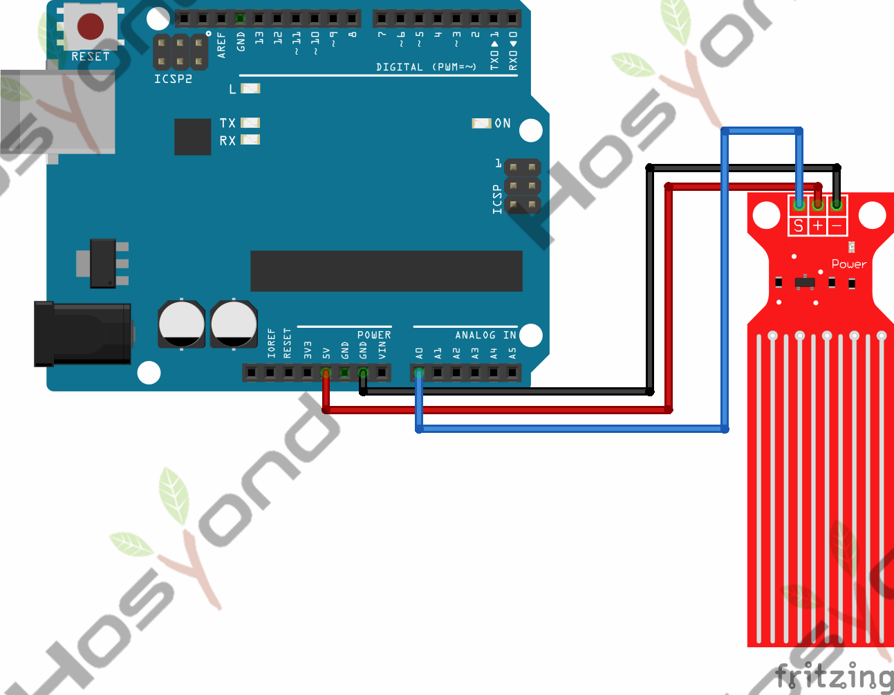
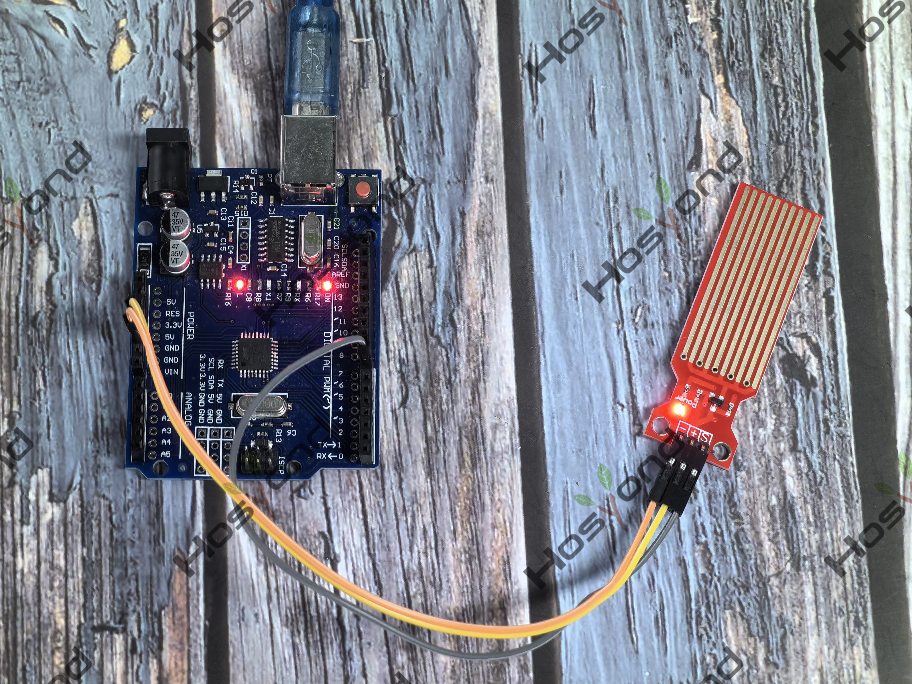

The sensor has ten exposed copper traces, five of which are power traces and the remaining five are sense traces. These traces are interlaced so that there is one sense trace between every two power traces.


// Sensor pins
// #define sensorPower 7
#define sensorPin A0
// Value for storing water level
int val = 0;
void setup() {
// Set D7 as an OUTPUT
// pinMode(sensorPower, OUTPUT);
// Set to LOW so no power flows through the sensor
// digitalWrite(sensorPower, LOW);
Serial.begin(9600);
}
void loop() {
//get the reading from the function below and print it
int level = readSensor();
Serial.print("Water level: ");
Serial.println(level);
delay(1000);
}
//This is a function used to get the reading
int readSensor() {
// digitalWrite(sensorPower, HIGH); // Turn the sensor ON
delay(10); // wait 10 milliseconds
val = analogRead(sensorPin); // Read the analog value form sensor
// digitalWrite(sensorPower, LOW); // Turn the sensor OFF
return val; // send current reading
}